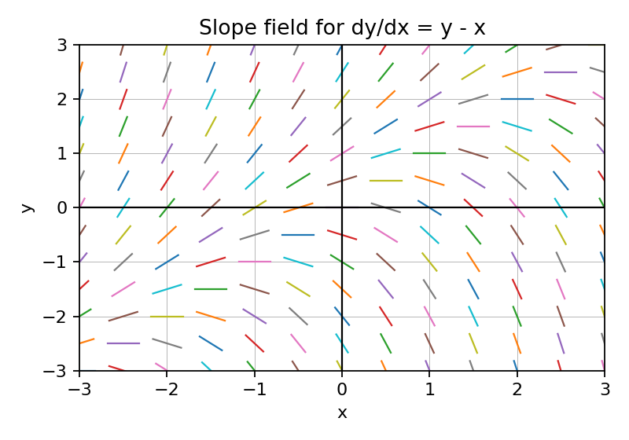
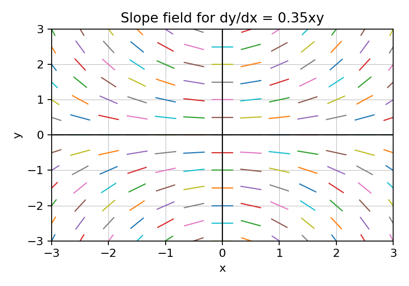
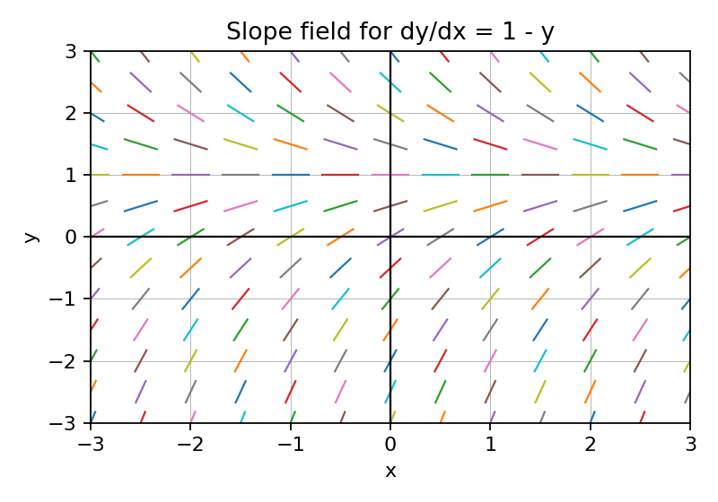

Use the slope field to estimate whether a solution through $(0,1)$ is initially increasing or decreasing.

Identify a region where solution curves would have positive slope.
Use the table of $\dfrac{dy}{dx}$ values to decide where the solution rises fastest.
| x | 0 | 1 | 2 |
|---|---|---|---|
| y | 1 | 1 | 1 |
| dy/dx | 1 | 3 | 5 |

Estimate the horizontal equilibrium solution from the slope field.
Given $\dfrac{dy}{dx}=x-y$, compute the slope at $(2,5)$.
For a solution curve through $(1,2)$ with slope $-3$, sketch a short tangent segment and describe the local behavior.